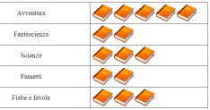
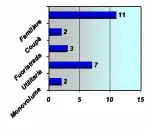
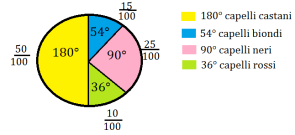
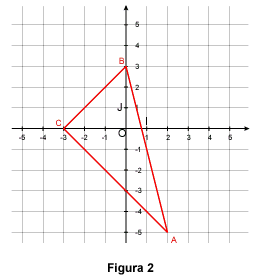

Un grafico è la rappresentazione con “un disegno” dei dati contenuti nella tabella.
Esistono diversi modi di rappresentare un grafico, distinti per il loro modo di presentare i dati, tra i più comuni vi sono:
-
Idreogrammi

-
ortogrammi o istogrammi

-
areogrammi

Il diagramma cartesiano è uno strumento grafico molto duttile, con cui possiamo rappresentare i dati che abbiamo in tabella, figure geometriche e, addirittura, mappe. E’ composto da un incrocio di due rette perpendicolari tra loro (formano nel punto di intersezione 4 angoli di 90 gradi).

La retta verticale è chiamata “ordinata” ed è rappresentata dalla lettera Y. Mentre la retta orizzontale è detta “ascissa” e viene identificata dalla lettera X. Ogni punto del diagramma cartesiano è identificato da una coppia di numeri detti coordinate. Il primo punto indica l’ascissa e il secondo punto l’ordinata (x,y).
